Created: 21/10/2021 | Last Update: 21/10/2021
Now you made changes to the site, you want to deploy the new version of the site.
If all changes work locally. Then make sure everything is commited and pushed to github. We start by explaining how to deploy code in visual studio.
If you have successfully finished the previous guide, you should see the Azure workloads button at the bottom side.
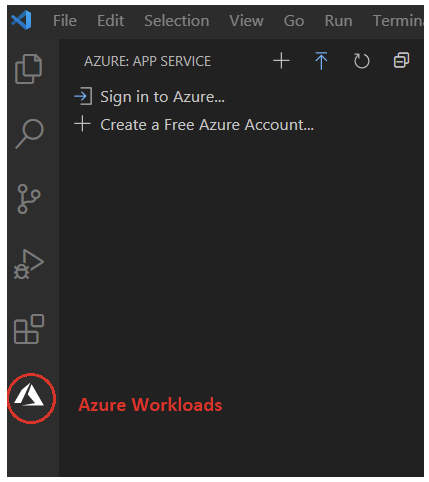you normally already have the passwords for this available. You use your microsoft nonprofit account.
After Sign into the Azure portal from Visual Studio Code, you can see the list of available subscriptions and web apps for that user.
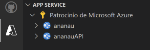! Be sure that the site is no longer compiled. (stop with crtl C) !
Before deploying to Azure, we must build our Angular app using below command.
C:\Users\...\Desktop\ananau-tutorial\ananau-bibliotheek-angular> ng build --prod
The option
--prod
is required.
We see that a new map has been created in our explorer.
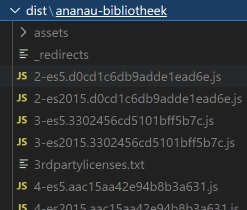We can click Azure App Service extension and click ananau (not ananauAPI) and right click and choose Deploy to Web App option.
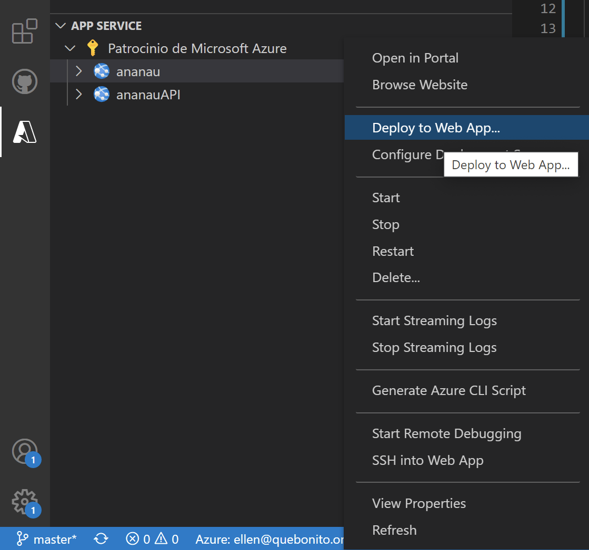By default, it will show the default Angular project folder. You must click Browse button and choose "dist\ananau-bibliotheek.
Do not select the dist folder, but select the ananau library folder (as in the photo below).
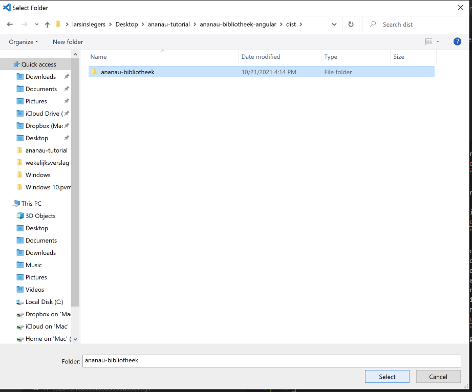YOUR CHANGES ARE NOW ONLINE!
In Solution Explorer, right-click the project node and choose Publish.
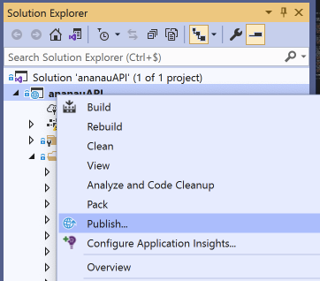If you have previously configured any publishing profiles, the Publish window appears. Select New.
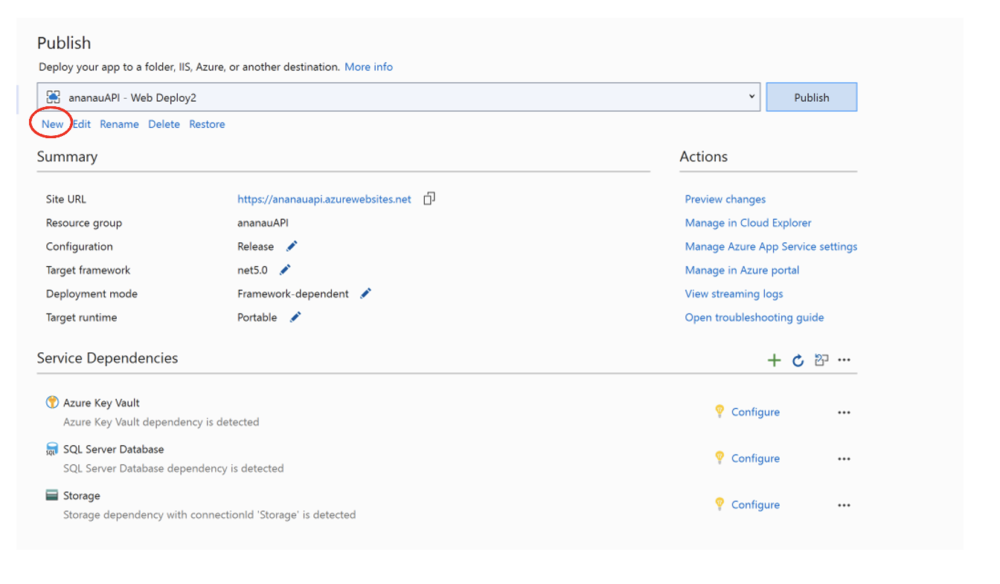In the Publish window, select Azure.
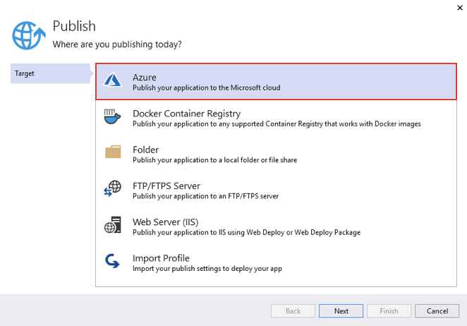Select Azure App Service (Windows) and Next.
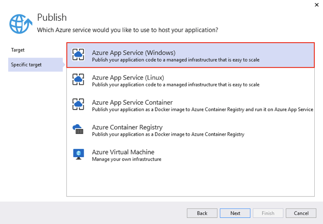Sign in with your Azure account.
In the Publish dialog, the instance has been selected. When ready, select Finish.
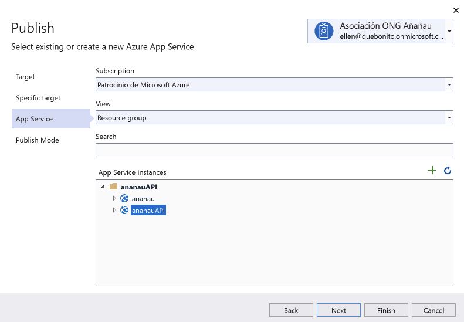Select Publish. Visual Studio deploys the app to your Azure App Service, and the web app loads in your browser. The project properties Publish pane shows the site URL and other details
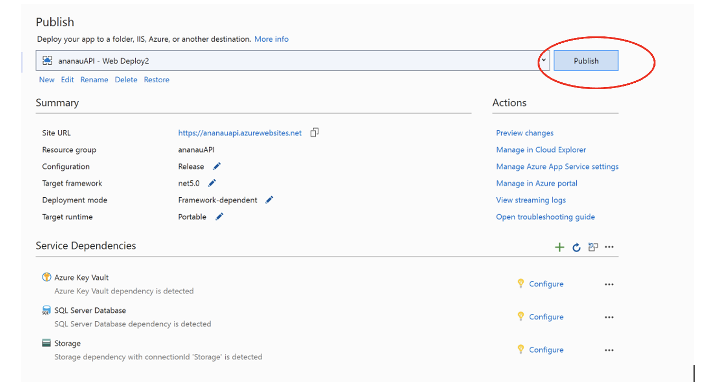YOUR CHANGES ARE NOW ONLINE!